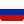
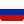

Название страницы
Josh Frydenberg was elected to the Australian Parliament in 2010 as the Member for Kooyong. He is the seventh person since Federation to hold this seat. Josh Frydenberg was elected to the Australian Parliament in 2010 as the Member for Kooyong. He is the seventh person since Federation to hold this seat. Josh Frydenberg was elected to the Australian Parliament in 2010 as the Member for Kooyong. He is the seventh person since Federation to hold this seat. Josh Frydenberg was elected to the Australian Parliament in 2010 as the Member for Kooyong. He is the seventh person since Federation to hold this seat. Josh Frydenberg was elected to the Australian Parliament in 2010 as the Member for Kooyong. He is the seventh person since Federation to hold this seat. Josh Frydenberg was elected to the Australian Parliament in 2010 as the Member for Kooyong. He is the seventh person since Federation to hold this seat. Josh Frydenberg was elected to the Australian Parliament in 2010 as the Member for Kooyong. He is the seventh person since Federation to hold this seat. Josh Frydenberg was elected to the Australian Parliament in 2010 as the Member for Kooyong. He is the seventh person since Federation to hold this seat. Josh Frydenberg was elected to the Australian Parliament in 2010 as the Member for Kooyong. He is the seventh person since Federation to hold this seat. Josh Frydenberg was elected to the Australian Parliament in 2010 as the Member for Kooyong. He is the seventh person since Federation to hold this seat. Josh Frydenberg was elected to the Australian Parliament in 2010 as the Member for Kooyong. He is the seventh person since Federation to hold this seat. Josh Frydenberg was elected to the Australian Parliament in 2010 as the Member for Kooyong. He is the seventh person since Federation to hold this seat. Josh Frydenberg was elected to the Australian Parliament in 2010 as the Member for Kooyong. He is the seventh person since Federation to hold this seat. Josh Frydenberg was elected to the Australian Parliament in 2010 as the Member for Kooyong. He is the seventh person since Federation to hold this seat. Josh Frydenberg was elected to the Australian Parliament in 2010 as the Member for Kooyong. He is the seventh person since Federation to hold this seat. Josh Frydenberg was elected to the Australian Parliament in 2010 as the Member for Kooyong. He is the seventh person since Federation to hold this seat. Josh Frydenberg was elected to the Australian Parliament in 2010 as the Member for Kooyong. He is the seventh person since Federation to hold this seat. Josh Frydenberg was elected to the Australian Parliament in 2010 as the Member for Kooyong. He is the seventh person since Federation to hold this seat. Josh Frydenberg was elected to the Australian Parliament in 2010 as the Member for Kooyong. He is the seventh person since Federation to hold this seat. Josh Frydenberg was elected to the Australian Parliament in 2010 as the Member for Kooyong. He is the seventh person since Federation to hold this seat. Josh Frydenberg was elected to the Australian Parliament in 2010 as the Member for Kooyong. He is the seventh person since Federation to hold this seat. Josh Frydenberg was elected to the Australian Parliament in 2010 as the Member for Kooyong. He is the seventh person since Federation to hold this seat. Josh Frydenberg was elected to the Australian Parliament in 2010 as the Member for Kooyong. He is the seventh person since Federation to hold this seat. Josh Frydenberg was elected to the Australian Parliament in 2010 as the Member for Kooyong. He is the seventh person since Federation to hold this seat.